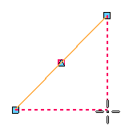
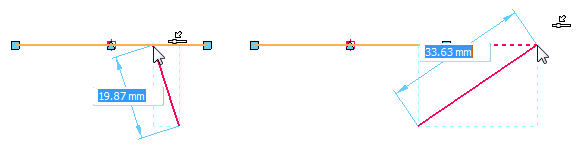

3D IntelliSketch
3D IntelliSketch is a dynamic drawing tool used for drawing 3D sketches and modifying sketch elements. 3D IntelliSketch allows you to sketch with precision by specifying characteristics of the design as you sketch.
For instance, 3D IntelliSketch allows you to sketch a line that is horizontal or vertical, parallel to an orientation triad axis, or a line that is parallel or perpendicular to another line or tangent to a circle. A few other possibilities are: draw an arc connected to the end point of an existing line, draw a circle concentric with another circle, or draw a line tangent to a circle.
How IntelliSketch works
As you draw, 3D IntelliSketch tracks the movement of the cursor and shows a temporary, dynamic display of the element you are drawing. This temporary display shows what the new element will look like if you click at the current position.
When 3D IntelliSketch recognizes a relationship, it displays a relationship indicator at the cursor. As you move the cursor, 3D IntelliSketch updates the indicator to show new relationships. If a relationship indicator is displayed at the cursor when you click to draw the element, that relationship is applied to the element. For example, if the Horizontal relationship indicator appears when you click to place the second end point of a line, then the line is horizontal.

IntelliSketch relationships
You can set the types of relationships you want 3D IntelliSketch to recognize on the 3D IntelliSketch group. 3D IntelliSketch can recognize one or two relationships at a time. When 3D IntelliSketch recognizes two relationships, it displays both relationship indicators at the cursor.

IntelliSketch locate zone
You do not have to move the cursor to an exact position for IntelliSketch to recognize a relationship. 3D IntelliSketch recognizes relationships for any element within the locate zone of the cursor. The circle around the cursor crosshair or at the end of the cursor arrow indicates the locate zone. You can change the size of the locate zone in the 3D IntelliSketch options dialog box.

Alignment indicators
3D IntelliSketch displays a temporary dashed line to indicate when the cursor position is horizontally or vertically aligned with a key point on an element.

Infinite elements
IntelliSketch recognizes the Point On Element relationship for lines and arcs as if these elements were infinite. In the following example, IntelliSketch recognizes a Point On Element relationship when the cursor is positioned directly over an element and also when the cursor is moved off the element.

Circle and arc keypoints
3D IntelliSketch displays indicators at the center point, silhouette points, end points, and midpoint of an arc. A circle displays indicators at the center and silhouette points. This makes these keypoints easy to locate.

Sweep angle lock at quadrants
When you draw tangent or perpendicular arcs, the arc sweep angle locks at quadrant points of 0, 90, 180, and 270 degrees. This allows you to draw common arcs without typing the sweep value on the command bar.

How do I
Lock an element or keypointApply a rigid set relationship to 3D sketch elements
Make elements symmetric in a 3D sketch
Look up more details
3D IntelliSketch Options commandRelationship Handles command (3D sketching)
Maintain Relationships command (3D sketching)
Relationship Colors command
Connect command (3D Sketching)
Parallel command (3D Sketching)
Concentric command (3D Sketching)
On Plane command (3D Sketching)
Horizontal Vertical command (3D sketching)
Equal command (3D Sketching)
Perpendicular command (3D Sketching)
Lock command (3D Sketching)
Rigid Set command (3D Sketching)
Symmetric command (3D Sketching)
Tangent command (3D Sketching)
Coaxial command (3D Sketching)
Collinear command (3D Sketching)